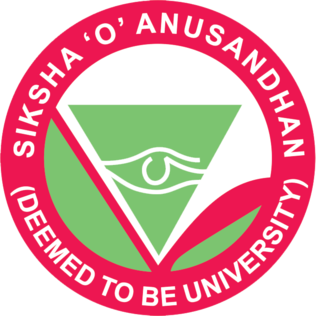

Institute of Technical Education and Research (ITER) is the faculty of engineering and technology of Siksha 'O' Anusandhan (SOA) Deemed to be University, Bhubaneswar. It is approved by AICTE and accredited by NAAC with A++ grade. ITER provides quality education in Engineering, MCA and other technical courses with modern labs and research facilities. The university focuses on innovation, skill development and overall growth of students.
Address: ITER, SOA University, Jagamara, Bhubaneswar, Odisha - 751030
Phone No: +91 98765 43210
Email: dipansu.pattanayak@example.com